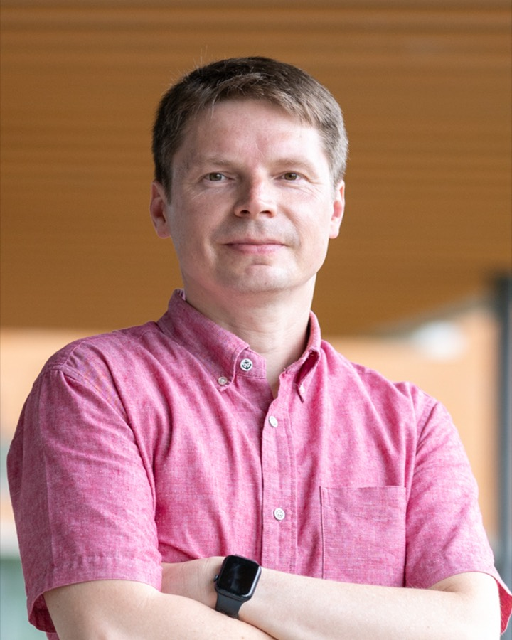

Membrane science · carbon capture
Roman Selyanchyn
セリャンチン・ロマン · Селянчин Роман
Associate Professor
Kyushu University · Platform of Inter-/Transdisciplinary Energy Research (Q-PIT)
Fukuoka, Japan
Roman Selyanchyn is an Associate Professor at Kyushu University, working at the Platform of Inter-/Transdisciplinary Energy Research (Q-PIT) and the International Institute for Carbon-Neutral Energy Research (I2CNER), in the Fujikawa Laboratory. His work spans two roles: interdisciplinary research on membrane-based gas separation for carbon capture, and, as Sub-Coordinator of the Education Promotion Division at Q-PIT, the coordination of energy-related education and research across Kyushu University. Originally trained as a physicist at Uzhhorod National University (Ukraine), he later specialised in nanomaterials, materials science, analytical chemistry and chemical sensors during his PhD at the University of Kitakyushu (Japan), and has authored more than 70 peer-reviewed papers, 2 book chapters and 2 patents.
Citations and h-index: Google Scholar, as of 1 Aug 2026.
Ultrathin membranes for CO2 capture
Dr. Selyanchyn's research addresses CO2 separation membranes, a central challenge in carbon capture. Rather than following the conventional study of materials and the trade-off between permeability and selectivity, he develops ultrathin membranes in which the separation layer is reduced to the scale of tens of nanometres, enabling higher CO2 transport rates without loss of selectivity. This thin-film-composite approach, initiated at Kyushu University, has since been adopted by other groups in the field and connects membrane science with materials chemistry, energy systems, and process engineering.
A new strategy for membrane-based direct air capture
Polymer Journal, 53(1), 111-119 · 2020
ACS Applied Materials & Interfaces, 12(29), 33196-33209 · 2020
Thickness Effect on CO2/N2 Separation in Double Layer Pebax-1657®/PDMS Membranes
Membranes, 8(4), 121 · 2018
Education promotion & research coordination
Around 60% of my current work is coordination rather than laboratory research. As Sub-Coordinator of the Education Promotion Division at Q-PIT, I coordinate the platform's education-promotion activities — most visibly the Q-ENERGY Innovator Unit, a cross-disciplinary doctoral programme under Kyushu University's K2-SPRING — and help coordinate energy-related research across the university.
Q-ENERGY Innovator Unit →Fundamentals of Organic Chemistry for International Undergraduate Students
Introduction to the Decarbonisation of Energy 脱炭素エネルギー概論
I am also involved in other educational activities of Q-PIT.
Associate Professor; Sub-coordinator, Education Promotion Division
Kyushu University
Coordination of energy-related education at the university. Research: membrane-based gas separation and development of systems for direct air capture of carbon dioxide.
Assistant Professor
Kyushu University
Research: carbon-neutral energy, nanomaterials, nanotechnology, materials science, ultrathin films, molecular interfaces, membrane gas separation, post-combustion CO2 capture.
WPI Researcher
Kyushu University
Research: carbon-neutral energy, membrane gas separation, post-combustion CO2 capture, nanotechnology, materials science.
Post-doctoral Researcher
University of Kitakyushu
Research: analytical chemistry, GC-MS, environmental applications, method development, pyrolysis-GC-MS, sensors, fiber-optic gas sensors, quartz crystal microbalance sensors, nanotechnology, applied materials.
Clinical Trials Study Coordinator
Uzhhorod National University
Clinical trial organization on the trial site: logistics, documentation, database support, data capture and reporting, biological sample collection/storage/shipment, good clinical practice (GCP).
Post-graduate Researcher
Uzhhorod National University
Research in elementary-particle physics; mathematical modeling of excited quark systems and singlet-triplet mixing. Part-time: engineer in the university computer network laboratory, supporting and developing the university network.
Ph.D. (Doctor of Engineering) — Environmental Engineering
University of Kitakyushu
Thesis: “GC-MS and sensor based analytical approaches for environmental and medical monitoring”
Graduated
Master of Physics — Physics (specialty: engineer of physics; high-energy / elementary-particle physics)
Uzhhorod National University
Graduated with distinction
- Doctor of Engineering (Ph.D.), Environmental EngineeringUniversity of Kitakyushu, 2012
- Master of Physics, Physics (engineer of physics)Uzhhorod National University, 2002
- Membranes for gas separationAdvanced
- Analysis & characterization: GC, GC-MS, UV-Vis, XRD, XPS, FTIRAdvanced
- Microstructure characterization: SEM, TEM, optical/laser/fluorescent microscopyAdvanced
- Data analysis and visualizationAdvanced
- MS Office, Adobe CC, OriginLabAdvanced
- Clinical trials in oncologyAdvanced (5 years)
- Cell culturingIntermediate (~3 years)
- UkrainianNative
- EnglishProfessional working proficiency (IELTS 7.0)
- JapaneseIntermediate (JLPT N3)